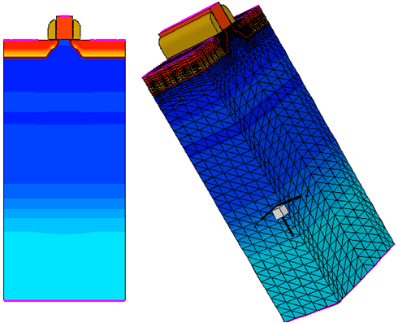
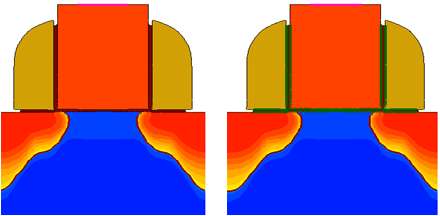

main menu
| module menu
| << previous section
| next section >>
main menu
| module menu
| << previous section
| next section >>
Sentaurus Mesh
8. Tools Section
8.1 Introducing the Tools Section
8.2 Using the Tools Section
8.3 Transformation
8.4 Extrude
8.5 Cut
8.6 Reflection
8.7 Mesh2bnd
8.8 Slice
8.9 Handling Interface Regions
Objectives
- To introduce the Tools section of the command file of Sentaurus Mesh.
8.1 Introducing the Tools Section
Sentaurus Mesh can perform certain geometric operations on a device boundary or mesh, which can help you to analyze a mesh, to increase flexibility in constructing device structures, and to improve device simulator performance.
The Tools section of the command file is where you specify the instructions to execute geometric operations on either a boundary file or a mesh file. The operations are executed sequentially in the order of their placement in the Tools section. Therefore, the output of one operation becomes the input for the next operation.
Some of the available operations of the Tools section are:
Tools {
Set Transformation {...}
Apply Transformation
Slice {...}
Cut {...}
Reflection {...}
Sweepmesh {...}
Mesh2bnd
Mesh2Hybrid
addInterfaceRegions | removeInterfaceRegions
...
}
where:
- Set Transformation sets a transformation matrix to a mesh or a boundary (translation, rotation, scaling). To apply a transformation, it must be followed by the Apply Transformation statement.
- Slice generates a 2D slice on a 3D mesh or a boundary. The 2D slice is defined by specifying a normal slice plane and its location.
- Cut is used to cut a part of a 3D mesh. The side of the cut mesh is defined as the one to which the normal points. It is limited to 3D meshes only.
- Reflection mirrors a mesh at a specified location and appends it to the original mesh. It is limited to meshes only.
- Extrude creates a 3D mesh from a 2D mesh by extruding the mesh in the third dimension.
- The option Mesh2bnd activates the utility that extracts a boundary from a mesh as well as sets the geometric accuracy and short edge to remove unwanted small features of the geometry.
- The option Mesh2Hybrid activates the utility that converts a standard tetrahedra-element mesh to a mixed-element mesh, containing hexahedra, prisms, pyramids, and tetrahedra. The idea of this conversion is to minimize the number of mesh elements as much as possible to make the subsequent device simulations run faster.
- The option addInterfaceRegions or removeInterfaceRegions adds or removes regions that represent interfaces.
8.2 Using the Tools Section
To run Sentaurus Mesh in Tools mode, you must create a command file with an IOControls section and a Tools section that has one or more options. The IOControls section must have the option EnableTools or EnableSections, as well as the inputFile and outputFile specifications.
All the Sentaurus Mesh command files discussed in this section are in the Sentaurus Workbench project Applications_Library/GettingStarted/snmesh/Tools. To work with the project, start Sentaurus Workbench and copy the project Tools to a local directory within the Sentaurus Workbench working directory.
8.3 Transformation
It is common that the boundary or the meshed structure needs to be changed by applying a transformation. This can be helpful to translate the structure or to rotate the structure. The following subsections describe the transformation operations.
8.3.1 Translation
The structure is translated along a vector in any direction when applying translation in the Set Transformation section. This can be performed, as in the example here, where a translation vector of (0.1 0 0) is used and the transformation is applied by the Apply Transformation statement.
The same file as previously shown is used here.
Click to view the command file translate_msh.cmd.
{kind=link}
Figure 1. (Left) Original and (right) translated structure. (Click image for full-size view.)
The IOControls section specifies the names of the input (before transformation) and the output (after transformation) TDR files. In the Sentaurus Workbench environment, you can use the constructs @tdr/i@ and @tdr/o@ to select the output of the previous node for input and the current node for the output, respectively.
8.3.2 Rotation
You can rotate a structure around any axis when applying rotation in the Set Transformation section. A sequence of rotations can be applied. This can be performed, as in the example here, with a rotation of 180° around the z-axis, followed by translation along the y-direction. To activate the transformation, use the Apply Transformation statement.
Click to view the command file rotate_msh.cmd.
In addition, a matrix transformation can be applied. Refer to the Sentaurus™ Mesh User Guide.
{kind=link}
Figure 2. (Left) Original and (right) rotated structure. (Click image for full-size view.)
8.4 Extrude
Sentaurus Mesh can create a 3D meshed structure from a 2D grid by extruding the mesh along a normal direction. The number of mesh divisions and the extrusion length can be specified. However, it is most likely that the created mesh will be unsuitable for device simulation.
The example here demonstrates how to perform an extrusion.
Click to view the command file extrude_msh.cmd.

Figure 3. (Left) Original structure and (right) extruded structure.
8.5 Cut
Sentaurus Mesh can cut part of a 3D structure using the cut operation. The removal can be performed along any arbitrary plane, which is defined by its normal and a location. The part on the right side of the plane is removed.
The file nmos_full_msh.tdr is used and is first extruded as shown in Section 8.4 Extrude. This is followed by the cut operation.
Click to view the command file cut_msh.cmd.
{kind=link}
Figure 4. (Left) Original and (right) cut structure. (Click image for full-size view.)
8.6 Reflection
Sentaurus Mesh can reflect 2D or 3D meshed structures. This is performed by the reflection operation. One or several mirroring operations can be combined, which reflect the structure at any boundary edge. In addition, the naming of the reflected isolated parts can be updated with the map statement. This operation is equivalent to the mirroring operation of Sentaurus Data Explorer described in Section 4.4.2 Submeshes.
The file nmos_half_msh.tdr is the same as previously shown in Section 4.4.2 Submeshes.
Click to view the command file reflect_msh.cmd.
{kind=link}
Figure 5. (Left) Original and (right) mirrored structure. (Click image for full-size view.)
8.7 Mesh2bnd
Sentaurus Mesh can extract a boundary from a TDR file and smooth it out using the Mesh2bnd operation. When choosing the output file name in the IOControls section, you should use the Sentaurus Workbench construct @tdrboundary/o@.
Click to view the command file msh2bnd_msh.cmd.
{kind=link}
Figure 6. (Left) Original mesh and (right) extracted boundary. (Click image for full-size view.)
8.8 Slice
In Section 4.5 Three-Dimensional Doping Profile Construction, the slice operation was used to extract a 2D slice from a 3D structure. This feature is helpful when comparing a 2D simulation to a 3D simulation. However, it is imperative to check the mesh quality and whether it fulfills the Delaunay criteria.
8.9 Handling Interface Regions
By default, Sentaurus Mesh saves interfaces between materials as separate entities. This allows you to save data on these interfaces, which is important for certain simulation tasks (for example, an interface trap save or load with Sentaurus Device). Saving interfaces can be switched off by specifying:
IOControls {
saveInterfaceRegions = false
}
To add interface regions to existing TDR files, you must specify the addInterfaceRegions option in the Tools section.
Click to view the command file addinterface_msh.cmd.
To remove existing interface regions, use the removeInterfaceRegions option.
Click to view the command file removeinterface_msh.cmd.
Figure 7 shows the use of the addInterfaceRegions option on the same device structure as in the previous example. The newly introduced material interface objects (highlighted in green) can be visualized in Sentaurus Visual.
Refer to the Sentaurus™ Mesh User Guide for details.

Figure 7. (Left) Original structure and (right) structure after using the addInterfaceRegions option.
main menu | module menu | << previous section | next section >>
Copyright © 2022 Synopsys, Inc. All rights reserved.